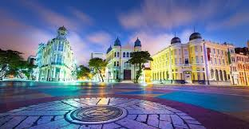

O Marco Zero
O Marco Zero é o ponto de referência histórica e geográfica do Recife, e é considerado o centro da cidade. Localizado na Praça do Marco Zero, no Bairro do Recife, esse marco simboliza o início das medições de distâncias de todas as rodovias do estado de Pernambuco.
Curiosidades
- O Marco Zero foi inaugurado em 1850.
- É o ponto de origem das distâncias das estradas no estado de Pernambuco.
- Localiza-se próximo ao bairro do Recife Antigo, um dos mais históricos da cidade.
Atrações ao redor do Marco Zero
Além do marco em si, a área ao redor oferece diversas atrações turísticas:
- Rua do Bom Jesus: uma das ruas mais antigas do Recife.
- Fundação Joaquim Nabuco: um centro cultural importante.
- Sinagoga Kahal Zur Israel: a primeira sinagoga das Américas.